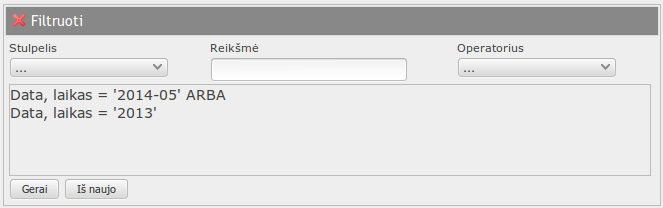
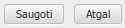

LSMU PERT veiklos informacinė sistema PERTIS
Naudotojo vadovas
Turinys
- Apie sistemą
- Pradžiamokslis
- Prisijungti prie sistemos
- Naudotojo sąsaja
- Sistemos meniu
- Užduočių lenta
- Lentelės rodinys
- Formos rodinys
- Pranešimai apie klaidas
- Informaciniai pranešimai
- Pastabos apie naudotojo sąsają
- Užduoties/gedimo registravimo pavyzdys
- Užduoties vykdymo aprašymo pavyzdys
- Užduočių registras/gedimų žurnalas
- Užduotys
- Ataskaitų generavimas
Apie sistemą
LSMU PERT kompiuterinė informacinė sistema, sauganti ir apdorojanti informaciją apie PERT veiklą.
 Ikonos – Silk Icons
Aplikacijos variklis – VDBVA
Ikonos – Silk Icons
Aplikacijos variklis – VDBVA
- Rekomenduojama naršyklė – FireFox 3+, Chrome, Internet Explorer 7+
Pradžiamokslis
Prisijungti prie sistemos
Atsiversti saityno naršyklę, adreso laukelyje surinkti sistemos url adresą, pvz. http://pertis.lva.lt
 Pastaba.
Sistema gali naudoti taip vadinamą „self signed“ sertifikatą šifruotam SSL ryšiui. Saityno naršyklės nežino apie tokio
sertifikato buvimą, todėl informuoja naudotoją, kad ryšys nesaugus. Reikia ignoruoti naršyklės pranešimą arba įdiegti
sertifikatą. (Saitas į sertifikatą) arba klauskite pas sistemos administratorių.
Pastaba.
Sistema gali naudoti taip vadinamą „self signed“ sertifikatą šifruotam SSL ryšiui. Saityno naršyklės nežino apie tokio
sertifikato buvimą, todėl informuoja naudotoją, kad ryšys nesaugus. Reikia ignoruoti naršyklės pranešimą arba įdiegti
sertifikatą. (Saitas į sertifikatą) arba klauskite pas sistemos administratorių.
- Spausti ignoravimui:
- Internet explorer – „Continue on this website“
- Mozilla Firefox – „I understand risks“, po to „Add exception“
- Google Chrome – „Proceed anyway“

- Laukelyje „Language“ galite pakeisti kalbą
- Laukelyje „Prisijungti“ įvesti prisijungimo vardą, suteiktą sistemos administratoriaus, arba LSMU AD prisijungimo vardą
- Laukelyje „Slaptažodis“ įvesti slaptažodį, suteiktą sistemos administratoriaus, arba LSMU AD slaptažodį.
- Laukelyje „DB“ pasirinkti duomenų bazę, pvz. PERTIS
- Spausti
Jei paspaudus „Gerai“ nieko nevyksta arba matyti pranešimas „Netinka vardas/slaptažodis/DB“, pasitikrinkite, ar teisingai įvedėte prisijungimo vardą, slaptažodį, ar parinkote duomenų bazę ir bandykite dar kartą, arba kreipkitės į sistemos administratorių.
į pradžiąNaudotojo sąsaja
Duomenys sistemoje įvedami, redaguojami, naikinami naudojantis „lentelė – forma“ metodu, t. y. pasirinkus lentelę meniu ar „užduočių lentoje“, rodomi lentelės įrašai ir veiksmų su įrašais piktogramos. Lentelės eilutė (įrašas) įvedamas/taisomas eilutės redagavimo formoje.
Sistemos lango viršuje yra informacinė eilutė apie įmonę, informacinę sistemą, bei prisijungusį naudotoją, žemiau – sistemos meniu, kuriame pasirenkama lentelė, rodomų eilučių skaičius ekrano puslapyje, įrašų atnaujinimo, pagalbos, darbo pabaigos su sistema piktogramos. Žemiau sistemos meniu, priklausomai nuo sistemos nustatymų, rodoma „užduočių lenta“ su informacinės sistemos meniu.
Pastaba. „Užduočių lenta“ gali būti ir nerodoma, nes „užduočių lentą“ įjungia ir nustatymus tvarko
sistemos naudotojas, tvarkantis sistemos nustatymus.
Pastaba. Šiame vadove veiksmų aprašymuose naudojant terminą „užduočių lenta“ turima omenyje,
kad užduočių lenta nustatyta pagal numatytuosius parametrus ir įjungta.
Sistemos meniu
- Language – pakeisti kalbą;
- Skyrius – pasirinkti lentelę redagavimui;
- Rodyti ... eilučių (-tes) – kiek lentelės eilučių rodyti ekrano puslapyje;
- Atnaujinti – atnaujinti duomenis, jei buvo DB struktūros pakeitimai;
- Pagalba – šis vadovas, kontekstinė pagalba;
- Baigti – baigti darbą su sistema, prisijungti prie kitos duomenų bazės.
„Užduočių lentos“ pavyzdys
Iš meniu „Lentelė“ arba užduočių lentos pasirinkus norimą redaguoti lentelę, ji atverčiama.
į pradžiąLentelė
 – užversti, uždaryti lentelę;
– užversti, uždaryti lentelę;- Užduočių registras – lentelės pavadinimas;
 – naikinti pažymėtą lentelės eilutę;
– naikinti pažymėtą lentelės eilutę; – įterpti naują lentelės eilutę;
– įterpti naują lentelės eilutę;- – kopijuoti pažymėtą lentelės eilutę;
 – redaguoti pažymėtą lentelės eilutę;
– redaguoti pažymėtą lentelės eilutę; – peržiūrėti pažymėtą lentelės eilutę;
– peržiūrėti pažymėtą lentelės eilutę; – įjungti/išjungti filtravimo dialogą;
– įjungti/išjungti filtravimo dialogą; – Spausdinti.
Jei pažymėta eilutė, spausdinama ataskaita tik su tos eilutės duomenimis, jei ne – visos lentelės duomenys;
– Spausdinti.
Jei pažymėta eilutė, spausdinama ataskaita tik su tos eilutės duomenimis, jei ne – visos lentelės duomenys;- Puslapis ... iš ... – kelintas ekrano puslapis/iš viso puslapių dabar matomas, pasirinkti puslapį;
- «» – ankstesnis, kitas ekrano puslapis;
- – lentelės eilutės žymeklis. Vienu metu gali būti pažymėta tik viena eilutė.
- – lentelės stulpelio antraštė.
- Rikiuoti – paspaudus stulpelio pavadinimą (paveikslėlyje – „Nuo“), lentelė įrašai surikiuojami didėjančia arba mažėjančia tvarka.
- Atšaukti rikiavimą – paspausti ant antraštės „Nr.“.
- Įvedus filtravimo sąlygą į laukelį, esantį žemiau stulpelio pavadinimo ir paspaudus ENTER (FF) arba TAB (IE), įjungiamas filtras.
- Taip pat, paspaudus
ir atvertus platesnio filtro dialogą, galima nustatyti ir sudėtingesnę filtravimo sąlygą (filtruoti ne pagal vieno stulpelio reikšmę, apjungti kelias reikšmes IR ARBA, t. t.).

- Išjungti filtrą – tiesiog ENTER (TAB) filtro įvedimo laukelyje, arba spausti
 .
. - Nustatant filtro sąlyga reikėtų galvoti maždaug taip: „Parodyti visus įrašus, kurių (stulpelio pavadinimas) panašus į (filtro sąlyga)“.
-
Pastaba. Pritaikytas rikiavimas ir/arba filtras galioja ir spausdinamoms ataskaitoms.
- – lentelės informacinė eilutė. Filtras ir rikiavimas išjungti;
- – lentelės informacinė eilutė. Įjungtas filtras;
- – lentelės informacinė eilutė. Įjungti filtras ir rikiavimas;
Lentelės eilutę pažymėjus () ir paspaudus
,
atverčiama eilutės redagavimo forma.
Panaši forma atverčiama ir naikinant
()
bei įterpiant
()
eilutes.
Eilutės redagavimo forma
 – formos antraštė. Rodoma formos uždarymo piktograma ir lentelės pavadinimas;
– formos antraštė. Rodoma formos uždarymo piktograma ir lentelės pavadinimas;- – formos informacinė eilutė. Rodomas veiksmas su lentelės eilute („Taisyti“, „Naikinti“, „Įterpti“);
- – laukelis taisymui. Duomenys įvedami „ranka“. Jei duomenys neįvedami, priskiriami sistemos numatytieji duomenys;
- – sąrašo
laukelis. Duomenys negali būti įvedami „ranka“, būtina pasirinkti iš sarašo, esančio laukelio dešinėje.
Jeigu reikia papildyti sąrašą, spausti sąrašo laukelio dešinėje;
- – laukelis tik skaitymui. Duomenų įvesti/taisyti negalima. Sistema užpildo šiuos laukelius automatiškai;
- – jei redaguojama lentelė turi susijusiujų lentelių, rodomi susijusiujų lentelių pavadinimai. Paspaudus pavadinimą, atverčiama susijusi lentelė formoje. Paspaudus piktogramą, esančią susijusiujų lentelių pavadinimų kairėje, visos susijusios lentelės užverčiamos.
-  – mygtukai.
Paspaudus duomenys išsaugomi, forma užverčiama.
Paspaudus , duomenys neišsaugomi, forma užverčiama,
t. p. paspaudus formos antraštėje.
Pranešimai apie klaidas
Įvairiais (dažniausiai neteisingo duomenų įvedimo atveju) atvejais sistema generuoja pranešimą apie klaidą. Klaidos pranešimo tekstas generuojamas iš duomenų bazių serverio, todėl, priklausomai nuo serverio versijos, nustatymų, gali būti ir ne lietuviškas. Klaidos pranešimo langas užverčiamas užvedus ant jo pelės žymeklį.
- Pranešimo apie klaidą pavyzdys
Informaciniai pranešimai
Įvairiais atvejais sistema generuoja informacinius pranešimus tam, kad informuoti naudotoją apie pvz. automatinį veiksmą, ar rolės leidimus. Informacinio praanešimo langas užverčiamas užvedus ant jo pelės žymeklį.
- Informacinio pranešimo pavyzdys
Pastabos apie naudotojo sąsają
- Jei formoje reikia įvesti datą (pvz. „Baigė“), datos formatas privalo būti arba YYYY-MM-DD (pvz. 2012-01-01), arba YYYY MM DD (pvz. 2012 01 01), arba YYYY.MM.DD (pvz. 2012.01.01);
- Greitai ieškoti įrašo sąraše galima pasirinkus sąraša ir spaudžiant pirmąjį norimo pasirinkti įrašo ženklą klaviatūroje (IE) arba greitai renkant klaviatūroje įrašo pavadinimą (FF).
- Jeigu įvedant duomenis reikia pasirinkti iš sąrašo, bet sąraše nėra norimo punkto,
sąrašą galima papildyti, paspaudus sąrašo laukelio dešinėje.
Užregistruoti gedimą/užduotį
Tarkime Jūsų kabinete perdegė elektros lemputė. Jeigu norite, kad ji būtų pakeista, turite užregistruoti gedimą sistemoje PERTIS.
Veiksmai:
- Prisijungti prie IS.
- Atsiversti Užduočių registrą/gedimų žurnalą.
- Įterpti įrašą apie gedimą/užduotį ir jį išsaugoti.
- Taisyti užduotį arba peržiūrėti vykdymą.
Užduoties vykdymo aprašymas
Tarkime, pagal aukščiau pateiktas instrukcijas PERTIS naudotojas užregistravo, kad perdegė lemputė. Šį gedimą lentelėje „Užduotys“ mato padalinio, kuriam buvo nurodytas gedimas/užduotis, atsakingas asmuo.
Padalinio atsakingo asmens veiksmai:
- Prisijungti prie IS.
- Atsiversti „Užduotys“.
- Taisyti užduoties įrašą, pažymėti, kad užduotis priimta, išsaugoti.
- Įvykdžius užduotį (pašalinus gedimą), taisyti tą patį įrašą,
įrašyti atlikimo pastabas, pažymėti „Pabaigta“ – „Taip“, išsaugoti.
- Jeigu reikia, galima taip pat įvesti resursus, sunaudotus užduoties vykdymui.
- Taip pat, įvedus resursus, sunaudotus užduoties vykdymui, galima suformuoti atsargų nurašymo dokumentą užduočiai.
- Jeigu reikia, galima taip pat paskirti užduoties vykdytojus
Generuoti ataskaitas
-
Ataskaitos generuojamos visai lentelei.
Jeigu reikia ataskaitos tik vienam įrašui, pirma reikia pažymėti
norimą atspausdinti įrašą.
-
Ataskaitoms galioja pritaikytas filtras ar rikiavimas.
- Spausti lentelės antraštėje.
- Atsiverčia ataskaitos parinkimo forma.
- Ataskaita – pasirinkti ataskaitos pavadinimą.
- Viršus – tekstas, spausdinamas pačiame lapo viršuje.
- Pabaiga – tekstas, spausdinamas ataskaitos pabaigoje
- Kintamieji, kurie gali būti panaudoti viršuje, pabaigoje
- %date% – ataskaitos spausdinimo data.
- %time% – ataskaitos spausdinimo laikas.
- %user% – naudotojo, atspausdinusio ataskaitą vardas.
- %application% – IS pavadinimas.
- %records% – iš viso įrašų kiekis ataskaitoje.
- %filter% – pritaikyto filtro sąlyga. Jei filtro nėra – tuščia.
- %order% – pritaikyto rikiavimo sąlyga. Jei rikiavimas išjungtas – tuščia.
- %company% – įmonės pavadinimas. Nustatomas lentelėje „Parametrai“.
-
Ataskaitų formos aprašomos ataskaitų konstruktoriuje.
- Paspaudus mygtuką ataskaita sugeneruojama ir parodoma ekrane. Spausdinimo parametrai nustatomi ir spausdinimas vykdomas naršyklės priemonėmis.
- Paspaudus mygtuką ataskaitos parinkimo forma užverčiama, ataskaita negeneruojama.
-
Jeigu naudojama „Internet explorer“ naršyklė, paspaudus „Atgal“,
naršyklė, priklausomai nuo jos nustatymų, gali rodyti įspėjimą apie tai, kad IS užverčia
kortelę (langą).